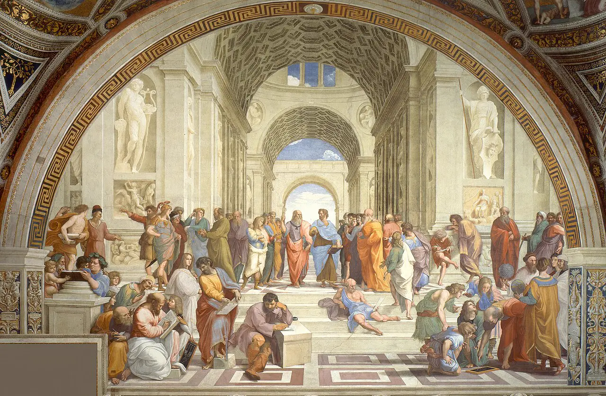

Why does a shorter string sound higher?
A string divided · c. 530 BC
Each pair starts on the same note; compare how far the second note rises.
Synthesised example
Schematic · intervalsOctave, fifth, fourth
Teaching schematic
The idea in detail
Pythagoras settled at Croton in southern Italy around 530 BC. He left no writings, and the musical discoveries attached to his name belong to a tradition assembled by later authors. What survives is a proposition that could be tested: the octave, fifth and fourth correspond to small whole-number ratios. Music already had long histories in Mesopotamia, Egypt and Greece. The ratios made its intervals available to mathematical demonstration.
A monochord is one string stretched over a resonating box, with a movable bridge that changes its vibrating length. Keep the string’s tension and mass per unit length constant and halve that length: the frequency doubles, producing an octave. Stop the string at two-thirds of its original length and the frequency becomes three-halves, a perfect fifth above the original note. Three-quarters of the length gives four-thirds of the frequency, a perfect fourth. The frequency ratios are therefore 2:1, 3:2 and 4:3; the corresponding length ratios run in the opposite direction. A fifth divided by a fourth gives 9:8, the Pythagorean whole tone.
A real stretched string also vibrates in several patterns at once. Its whole length produces the fundamental; two equal sections produce the second partial, three sections the third, and so on. For an ideal flexible string these frequencies form the harmonic series: 1, 2, 3, 4, 5, 6 times the fundamental. Over C, the first six partials are C, C, G, C, E and G in successively higher registers. The third partial is a fifth above the second, the fourth a fourth above the third. The fifth introduces the pure major third, 5:4, above the fourth.
The harmonic series supplies a modern acoustical explanation. Pythagorean tuning builds notes from successive pure fifths; its major third is 81:64, wider than the series’ 5:4. A flute, a violin and a voice emphasise their partials differently, which helps distinguish their timbres even on the same pitch. Bells and other vibrating bodies can have strongly inharmonic partials, whose frequencies depart from whole-number multiples of one fundamental.
Boethius’s De institutione musica, written around the beginning of the sixth century AD, carried Greek mathematical theory into Latin education. Music joined arithmetic, geometry and astronomy in the quadrivium: number studied in relation to sounding intervals. Ancient theorists organised scales through tetrachords — four notes spanning a fourth — and used terms such as harmonia and tonos in several distinct senses.
The Greek names Dorian, Phrygian and Lydian were later reassigned to church modes. Ancient Greek Dorian and medieval Dorian name different octave arrangements. A modern white-note scale from D to D is a useful first model of church Dorian. The names survived through changes of theory, repertory and musical practice.
Objects and sources

1509–11 · Fresco · Stanza della Segnatura, Vatican Museums
Pythagoras sits in the lower-left foreground, writing beside a tablet of musical proportions. Raphael placed the mathematical study of consonance among philosophy’s principal disciplines, more than two millennia after Pythagoras. The Vatican’s account identifies the interval under discussion as the diatessaron, the fourth. The fresco records a Renaissance view of ancient theory.